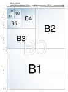
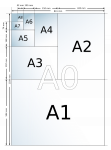
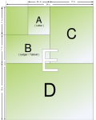

<?xml version="1.0" encoding="UTF-8"?><rss version="2.0"
	xmlns:content="http://purl.org/rss/1.0/modules/content/"
	xmlns:wfw="http://wellformedweb.org/CommentAPI/"
	xmlns:dc="http://purl.org/dc/elements/1.1/"
	xmlns:atom="http://www.w3.org/2005/Atom"
	xmlns:sy="http://purl.org/rss/1.0/modules/syndication/"
	xmlns:slash="http://purl.org/rss/1.0/modules/slash/"
	>

<channel>
	<title>Resources &#8211; Free websites for printers</title>
	<atom:link href="http://www.zetaprints.com/freesite/category/resources/feed" rel="self" type="application/rss+xml" />
	<link>http://www.zetaprints.com//freesite</link>
	<description>Just a sample of what you can do for free!</description>
	<lastBuildDate>Wed, 19 Oct 2011 09:53:17 +0000</lastBuildDate>
	<language>en-US</language>
	<sy:updatePeriod>hourly</sy:updatePeriod>
	<sy:updateFrequency>1</sy:updateFrequency>
	<generator>https://wordpress.org/?v=4.4.1</generator>
	<item>
		<title>Paper size charts</title>
		<link>http://www.zetaprints.com//freesite/resources/paper-size-charts</link>
		<pubDate>Thu, 24 Apr 2008 03:31:52 +0000</pubDate>
		<dc:creator><![CDATA[admin]]></dc:creator>
				<category><![CDATA[Resources]]></category>

		<guid isPermaLink="false">/freesite/?p=22</guid>
		<description><![CDATA[There have been many standard sizes of paper at different times and in different countries, but today there are two widespread systems in use: the international standard (A4 and its siblings) and the North American sizes. Read more on Wikipedia.]]></description>
				<content:encoded><![CDATA[<p>There have been many standard sizes of paper at different times and in different countries, but today there are two widespread systems in use: <strong>the international standard</strong> (A4 and its siblings) and <strong>the North American sizes</strong>.</p>

<a href='../../../resources/paper-size-charts/attachment/paper1/index.html'></a>
<a href='../../../resources/paper-size-charts/attachment/paper2/index.html'></a>
<a href='../../../resources/paper-size-charts/attachment/paper3/index.html'></a>

<p>Read more on <a href="http://en.wikipedia.org/wiki/Paper_sizes" target="_blank">Wikipedia</a>.</p>
]]></content:encoded>
			</item>
		<item>
		<title>CMYK vs RGB</title>
		<link>http://www.zetaprints.com//freesite/resources/cmyk-vs-rgb</link>
		<pubDate>Thu, 24 Apr 2008 03:19:19 +0000</pubDate>
		<dc:creator><![CDATA[admin]]></dc:creator>
				<category><![CDATA[Resources]]></category>

		<guid isPermaLink="false">/freesite/?p=20</guid>
		<description><![CDATA[CMYK (short for cyan, magenta, yellow, and key (black), and often referred to as process color or four color) is a subtractive color model, used in color printing, also used to describe the printing process itself. Though it varies by print house, press operator, press manufacturer and press run, ink is typically applied in the [&#8230;]]]></description>
				<content:encoded><![CDATA[<p><a href="http://en.wikipedia.org/wiki/Cmyk"></a> <a href="http://en.wikipedia.org/wiki/Cmyk" target="_blank"><strong>CMYK</strong></a> (short for <strong>c</strong>yan, <strong>m</strong>agenta, <strong>y</strong>ellow, and <strong>k</strong>ey (black), and often referred to as <strong>process color</strong> or <strong>four color</strong>) is a subtractive color model, used in color printing, also used to describe the printing process itself. Though it varies by print house, press operator, press manufacturer and press run, ink is typically applied in the order of the abbreviation.</p>
<p>The CMYK model works by partially or entirely masking certain <span class="mw-redirect">colors</span> on the typically white background (that is, absorbing particular <span class="mw-redirect">wavelengths</span> of light). Such a model is called <em>subtractive</em> because inks “subtract” brightness from white.</p>
<p>Read more on <a href="http://en.wikipedia.org/wiki/Cmyk" target="_blank">Wikipedia</a>.</p>
]]></content:encoded>
			</item>
	</channel>
</rss>

<!-- Localized -->